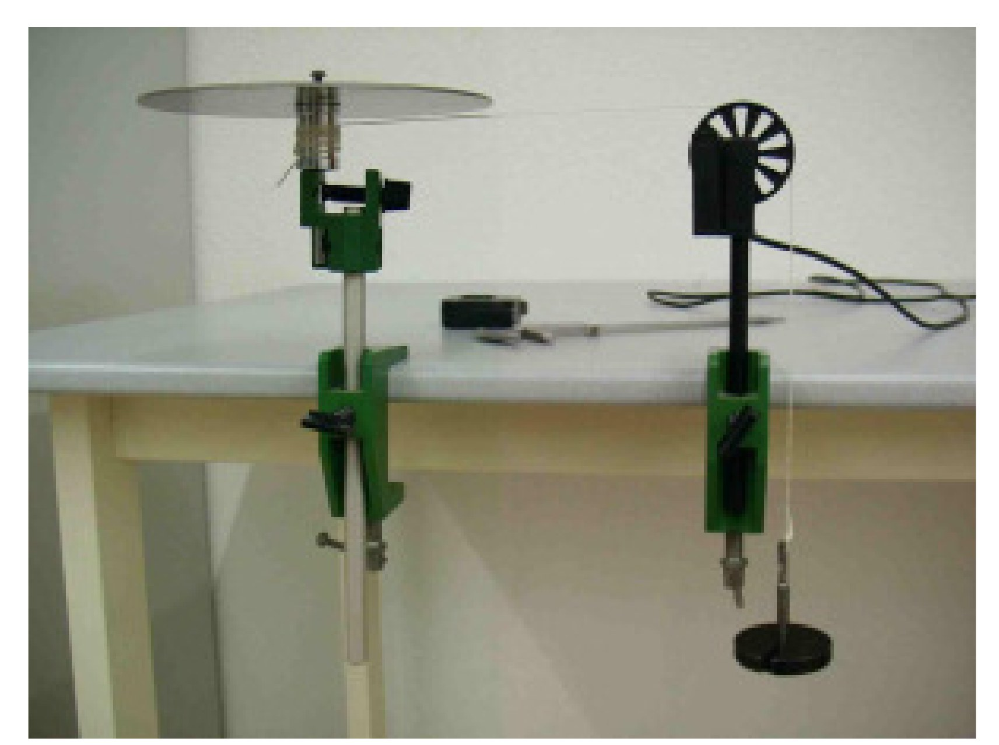
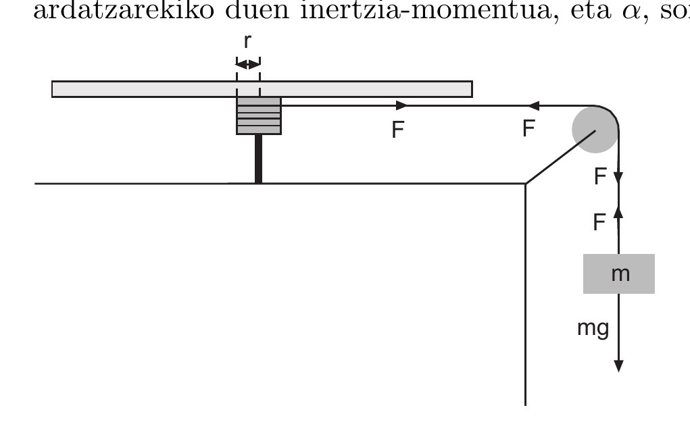
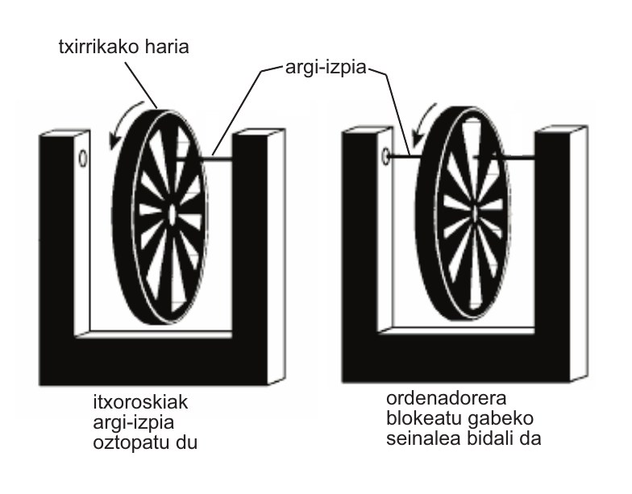

Prácticas de Laboratorio — UNED
2024-10-26
Determinación experimental del momento de inercia de un disco; comparación con el valor teórico \frac{1}{2}MR^{2}.

Dispositivo para la medida del momento de inercia de un discoEn esta práctica se determinará el momento de inercia de un cuerpo rígido (un disco) respecto a un eje fijo, a partir del estudio de su movimiento de rotación.
Para ello:
La magnitud principal que mediremos experimentalmente será la aceleración angular \alpha asociada al movimiento de rotación del disco.
Consideremos un cuerpo rígido (el disco) que puede girar libremente alrededor de un eje fijo. En el borde del disco (o en un tambor solidario al disco) se arrolla una cuerda de radio r, a la que se acopla una masa m que puede caer verticalmente.
Supondremos que:
La relación cinemática entre la aceleración lineal y la angular es
a = \alpha r \tag{1}
Por otra parte, sobre la masa colgante actúan dos fuerzas: el peso mg (hacia abajo) y la tensión T de la cuerda (hacia arriba). Aplicando la segunda ley de Newton a la traslación de la masa:
mg - T = m a \tag{2}
El disco experimenta un momento de fuerzas (torque) debido a la tensión que aplica la cuerda sobre el tambor. Si despreciamos otros torques (rozamiento en el eje, etc.), el momento resultante es
\tau = T r
y la segunda ley de Newton para la rotación toma la forma
\tau = I \alpha
donde I es el momento de inercia del disco respecto a su eje de giro. De las dos últimas expresiones se deduce
T r = I \alpha \tag{3}
Sustituyendo ahora \alpha mediante (1), es decir \alpha = a/r, en (3):
T r = I \frac{a}{r} \quad\Longrightarrow\quad T = I \frac{a}{r^2}
Introducimos esta expresión de T en la ecuación de traslación (2):
mg - I \frac{a}{r^2} = m a
Despejando I obtenemos
I = m r^2\,\frac{g - a}{a} \tag{4}
Esta ecuación expresa el momento de inercia del disco en función de magnitudes que, en principio, podemos medir experimentalmente:
La aceleración a se obtendrá a partir del registro temporal del movimiento de la masa, utilizando el dispositivo experimental y el programa de adquisición de datos.
Más adelante se podrá comparar el valor experimental de I con el valor teórico de un disco macizo de radio R y masa total M respecto a su masa-centro:
I_{\text{teórico}} = \frac{1}{2} M R^2
y, si se desea, aplicar el teorema de Steiner para referir el momento de inercia a otros ejes paralelos.
El dispositivo experimental consta esencialmente de:

En la práctica, la “polea inteligente” está acoplada de tal manera que el paso de la cuerda permite medir el tiempo y el desplazamiento lineal, y a partir de ellos calcular la velocidad y la aceleración.

El conjunto está conectado al ordenador. DataStudio dispone de una plantilla específica para esta práctica, que permite:
Encienda el ordenador y abra el archivo denominado “M7”, que pondrá en marcha el programa DataStudio con la configuración adecuada para esta práctica.
Familiarícese brevemente con la interfaz: ventanas de gráficas, panel de datos, controles de inicio y parada de la adquisición, etc.
Movimiento de la polea. Antes de montar el disco y la masa, utilice el dispositivo para familiarizarse con el funcionamiento de la polea inteligente:
Monte el sistema completo: disco, tambor, cuerda y masa colgante m.
Asegúrese de que:
Sitúe la masa colgante a una cierta altura inicial h medida desde una posición de referencia.
Prepare DataStudio para registrar el movimiento durante el intervalo de tiempo necesario para la caída completa de la masa.
Suelte la masa sin darle impulso adicional y deje que caiga libremente, haciendo girar el disco.
Registre con DataStudio la evolución temporal de la posición (o de la velocidad) de la masa.
A partir de la gráfica correspondiente:
Repita la medida anterior varias veces, manteniendo constante la masa m, para obtener un valor medio de la aceleración a y una estimación de su incertidumbre experimental.
Repita todo el proceso para diferentes valores de la masa colgante m (o, si el montaje lo permite, para diferentes radios efectivos r del tambor).
Para cada caso, determine a y, a partir de la ecuación (4),
I = m r^2\,\frac{g - a}{a},
calcule el correspondiente valor de I y su incertidumbre.
Compare los valores obtenidos de I con:
Discuta la compatibilidad entre los resultados experimentales y los valores teóricos, a la luz de las incertidumbres estimadas.
Considere la ecuación del movimiento rectilíneo uniformemente acelerado
h = v_0 t + \frac{1}{2} a t^2,
donde h es la distancia recorrida, v_0 la velocidad inicial, a la aceleración y t el tiempo.
Partiendo de esta expresión, obtenga la incertidumbre de h, \Delta h, en función de las incertidumbres de v_0, a y t.
Partiendo de las ecuaciones de Newton aplicadas al sistema representado en la Figura 1 (masa colgante más disco), deduzca la ecuación (4) que expresa el momento de inercia I en función de m, r, g y a.
A partir de la ecuación (4), obtenga la expresión de la incertidumbre de I, es decir \Delta I en función de las incertidumbres de m, r, g y a.
Escriba la expresión del momento de inercia de un disco macizo de radio r y masa m respecto a un eje que pasa por su centro de masa y es perpendicular al plano del disco.
Explique cómo podría utilizarse el teorema de Steiner para obtener el momento de inercia respecto a un eje paralelo desplazado una distancia d.